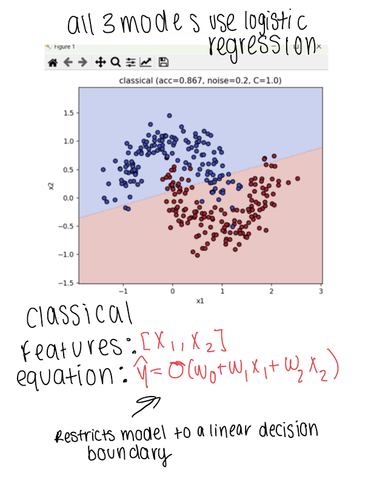

Date: September 23, 2025

These visual notes continue the Activity One discussion by comparing three feature representations while keeping logistic regression as the common classifier. Holding the model constant makes the role of representation easier to see: the original classical features restrict the classifier to a linear boundary, while richer mappings can reshape the problem before classification.
This is the conceptual bridge into quantum machine learning. A quantum circuit can act as a trainable or fixed feature map, but a quantum label alone does not guarantee a better model. We need controlled comparisons where the dataset, split, classifier, metrics, and noise are documented. That lets the group ask whether a quantum representation adds useful structure rather than merely adding complexity.
This meeting format also reflects my outreach goal for the division: diagrams, handwritten explanations, equations, and runnable experiments should reinforce one another so students can move between intuition and implementation.